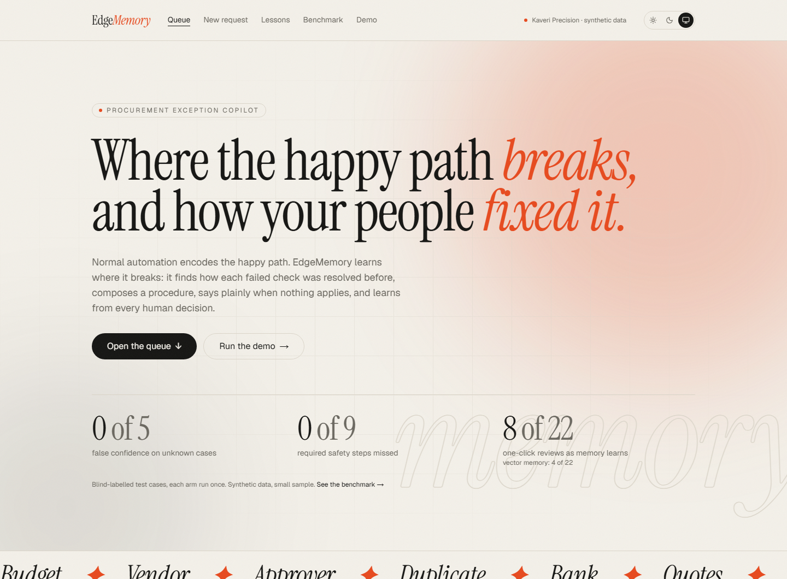

What EdgeMemory is, how it works, how to set it up and use it, and what to expect: in plain language, with pictures of the real screens.

Most purchase requests are routine. The ones that aren't (an expired certificate, a budget overrun, an approver on leave) take most of the time, and the know-how to fix them lives in people's heads and old emails.
In a company like Kaveri Precision Components (a made-up mid-size manufacturer in Hyderabad), every purchase request goes through a set of checks: Is there budget? Is the vendor in good standing? Is the right person available to approve? Is this a duplicate? Did the vendor's bank details change? Were enough quotes collected?
When a check fails, the request lands with a procurement analyst. They have to work out what to do: who to ask, what paperwork to collect, whether to hold the order. Usually someone solved the same problem before, but finding out how takes time. When several checks fail at once, the answer can be different from simply doing each fix.
Every request goes through the same five steps. The first four are automatic and take about 10–20 seconds. The fifth is yours.
A request with three failed checks isn't "one big unknown". EdgeMemory looks for a precedent for each check separately, so it can say "two of these three are familiar, one is new".
Sometimes two problems together need a different fix. Example: an approver on leave plus a budget overrun means the delegate can't approve; it must go one level up. EdgeMemory learns these combinations from past decisions; nobody programs them in.
A lesson backed by one case is tentative: you check each step. Once several cases agree it becomes established and can be approved in one click. If a reviewer overrules a lesson, it is revised. If policy changes, old lessons are flagged as out of date.
If any failed check has no real precedent, the case goes to a person, with what is known and what isn't. The goal is zero false confidence: never a confident answer that wasn't earned.
| Kind | What it means | How you review it |
|---|---|---|
| Normal | Every check passed. | One click |
| Known | One problem, and a precedent that applies directly. | One click if the lesson is established; otherwise step by step |
| Generalized | One problem, and a precedent that applies with some differences (listed for you). | Step by step |
| Composed | Several problems, each with a precedent. The procedure combines them, adjusted for how they interact. | Step by step |
| Unknown | At least one problem has no real precedent. | Goes to a person to resolve |
Behind the scenes: memory is Hindsight (by Vectorize). It stores each resolved case, merges similar cases into lessons, and keeps track of which cases each lesson came from, which is how every step can cite real case numbers.
EdgeMemory sits next to the approvals queue you already have. Requests can come from a monitored approvals inbox or from an export of your existing system. For each exception, it adds a recommendation: the steps, a citation for every step, and what isn't covered.
The approach (check each problem separately, learn how problems combine, learn from every human decision) could apply to other rule-heavy approval work, such as accounts-payable exceptions, IT change approvals or insurance claims. This build has only been built and tested for procurement.
About 15 minutes the first time. You need two programs, three free keys, and two terminal windows.
| Item | Details |
|---|---|
| Python 3.11 or newer | Runs the engine and the API (the "back end"). |
| Node.js 20 or newer | Runs the website (the "front end"). |
| Groq API key (free) | The main AI model, openai/gpt-oss-120b. From console.groq.com. |
| Gemini API key (free) | Backup AI models, used only if Groq fails. From Google AI Studio. |
| Hindsight Cloud key | The memory. From Vectorize's Hindsight Cloud. |
cd D:\EdgeMemory
.env in a text editor and paste your three keys between the quotes.
copy .env.example .env
python -m venv .venv .venv\Scripts\python -m pip install -r requirements.txt
cd web npm install cd ..
.venv\Scripts\python -m uvicorn api.main:app --port 8000
cd D:\EdgeMemory\web npm run dev
http://localhost:3000. Go to Demo, click Reset, then Seed. Seeding loads 37 past cases into memory and takes about 3 minutes.make setup installs, make api and make web start the two
parts, and make test runs the automated tests. Use .venv/bin/python in place of
.venv\Scripts\python.localhost:3000. The Demo page shows how much free AI quota is left and the API
response time. The API's own page is at localhost:8000/docs. To stop, press Ctrl+C in each window.Six pages, all in the top menu. The switch at the top right changes between light, dark, and your computer's setting.
The home page explains EdgeMemory in one line and shows headline results from the benchmark. The numbers come straight from the scored test runs. Scroll down for how it works, then the queue: open requests grouped by kind, most urgent first (cases that need a person at the top). Click any row to open it.
Opening a request shows how EdgeMemory reached its recommendation, in seven numbered stages. In demo mode they appear one after another, so you can follow the reasoning.
| # | Stage | What it tells you |
|---|---|---|
| 1 | The request | Vendor, amount, cost centre, and the original text. Important phrases (like a family link) are highlighted. |
| 2 | Failed checks | Which of the six checks failed, and exactly why. |
| 3 | How each problem was resolved before | For each failed check: whether a precedent applies, the past case numbers, and how mature the lesson is. |
| 4 | The plain combination | The steps you'd get by simply adding up each problem's lesson. |
| 5 | What changes together | Steps removed or added because these problems happened together, each with the past cases that justify it. |
| 6 | Safety floor | Any must-have steps added by the safety rules. |
| 7 | Recommended procedure | The final steps, each with its past cases and a Why this step? button, plus the decision buttons. |
| Button | When you see it | What happens |
|---|---|---|
| Approve | One-click cases (established lessons) | Accepts the procedure as it is. |
| Confirm | Step-by-step cases | Tick each step first, then confirm. |
| Resolve | Unknown cases | You write what should be done. This becomes a brand-new lesson. |
| Edit | Always | Change the steps. Your version is remembered as a correction. |
| Reject | Always | Overrule the lesson for this situation. EdgeMemory revises the lesson for similar cases. |
Pick a check (for example step:vendor) to see the current lesson in plain words, the cases it was built
from, and how it changed: removed words are struck through in red, new words are highlighted in green.
Type or paste a request the way people really write them. The example is pre-filled. Press Submit; after 10–60 seconds the new case opens with the staged reveal.
The results of testing EdgeMemory against simpler approaches on 24 made-up test cases whose correct answers were written down and locked before testing. The highlighted column is EdgeMemory. See section 07 for what the numbers mean.
Everything needed to run the scripted demo: the eight steps (each opens its case), the demo clock, Reset and Seed for the demo memory, and how much free AI quota is left today.
This is the best way to test EdgeMemory and see it learn. It takes about 10 minutes. Go to Demo, click Reset then Seed, and wait about 3 minutes. Then click Run on each step in order.
step:vendor to see the lesson now backed by more cases, with the change highlighted.| Action | Typical time |
|---|---|
| A new request (read, check, recall, compose) | 10–20 seconds (up to about 60 for a new request) |
| Saving a decision (remember and merge into lessons) | 6–10 seconds |
| Seeding the demo memory | About 3 minutes |
| The whole 8-step demo, including reset and seed | About 5 minutes |
EdgeMemory (C) was compared with: A, an AI with the policy but no memory; B, an AI with plain document search; and D, the same EdgeMemory pipeline with plain search memory instead of Hindsight. 24 made-up test cases; each approach ran once; the correct answers were locked before scoring.
| Measure | A | B | C · EdgeMemory | D |
|---|---|---|---|---|
| Confident answer on a case it should have escalated (lower is better) | 3 of 5 | 1 of 5 | 0 of 5 | 0 of 5 |
| Required safety steps missing (lower is better) | 7 of 9 | 4 of 9 | 0 of 9 | 0 of 9 |
| Kind of case identified correctly | 11 of 24 | 15 of 24 | 21 of 24 | 21 of 24 |
| Combined problems handled exactly right | 0 of 8 | 0 of 8 | 3 of 8 | 3 of 8 |
| Used an out-of-date lesson after a policy change (lower is better) | 0 of 3 | 0 of 3 | 0 of 3 | 2 of 3 |
| Right answer after a reviewer override | 1 of 3 | 3 of 3 | 0 of 3 | 0 of 3 |
Learning: when the test cases were replayed in date order with every decision remembered, EdgeMemory with Hindsight reached a one-click review on 8 of 22 exception cases, against 4 of 22 with plain search memory, and gave no false-confidence answers along the way.
| What you see | What to do |
|---|---|
| The website won't open at localhost:3000 | Check the website window is still running (npm run dev). Start it again if it stopped. |
| Pages load but show "Couldn't load…" errors | The API isn't running. Start it in its own window (step 5 of setup) and refresh. |
| Every case says "Memory unavailable, escalating to a human" | The memory service or the AI can't be reached. Check the internet connection and the keys in .env, then look at the API window for errors. |
| A step is stuck on "Running…" for more than a minute | The free AI quota is probably used up for now. Check the quota on the Demo page; it refills gradually. |
| A case cites itself, or the demo looks different from this guide | A step was run twice without resetting. Click Reset then Seed on the Demo page and run the steps in order. |
| A page shows an error after the computer was busy for a long time | Stop the website window (Ctrl+C) and start it again with npm run dev. |
| The animations are distracting | Turn on "reduce motion" in your computer's settings; the app switches its animations off. |
.venv\Scripts\python -m pytest -q runs 170 automated tests offline in a few seconds. They should all pass.| Word | Meaning |
|---|---|
| Purchase request (PR) | A request to buy something. The six checks run on it. |
| Purchase order (PO) | The document that commits the company to buy. "Hold PO" means don't issue it yet. |
| Exception | A request that failed at least one check and needs a person's attention. |
| Precedent | A past case where people resolved the same kind of problem. Every recommended step cites one. |
| Lesson | What memory has learned from several precedents, in plain words. |
| Tentative / established | A lesson from one case is tentative (check each step); one backed by several agreeing cases is established (one click). |
| Override | A reviewer rejected or changed what a lesson said for a specific situation. Later similar cases follow the reviewer. |
| Interaction | Two or more problems happening together, where the right fix differs from doing each fix separately. |
| Safety floor | Steps no lesson can remove, such as holding payment until a changed bank account is confirmed by phone. |
| False confidence | Giving a confident procedure for a problem with no real precedent. The target is zero. |
| Escalate | Send the case to a person to decide. |
| Cost centre | A department's budget line (for example CC-MACH, machining). |
| Delegate | The person allowed to approve while the usual approver is away, up to a set amount. |
| Line down | A production line has stopped, which makes the request urgent. |
| Sole source | Only one approved vendor can supply the item, so the usual three quotes aren't possible. |
| GST | India's Goods and Services Tax. A cancelled GST registration is a serious vendor problem. |
| Lakh (L) | Indian unit: 1 lakh = ₹1,00,000. So ₹4.8L = ₹4,80,000. |
| Hindsight | The memory service (by Vectorize) that stores cases, merges them into lessons, and tracks where each lesson came from. |
| Synthetic data | Made-up data. Kaveri Precision Components and everything about it is fictional. |
EdgeMemory recommends; a human always decides. It never releases a payment. Built for HackwithHyderabad 3.0 with Hindsight memory. All data in this guide is synthetic.